| # | Word | 🖼 Картинки | Значение | Примеры | Перевод примеров | Повт. |
|---|---|---|---|---|---|---|
| 1 | priced in [praɪst ɪn] |
— абстрактное | 1. уже заложен / учтён в цене (новость, риск — рынок уже отреагировал) 2. заранее ожидаемый, принятый в расчёт | 1. The bad news is already priced in, so the stock didn't fall. 2. "The fear is priced in" — investors already expect the risk. | 1. Плохие новости уже заложены в цене, поэтому акции не упали. 2. «Страх уже заложен в цене» — инвесторы уже учитывают этот риск. | |
| 2 | the upside [ˈʌpsaɪd] |
— абстрактное | 1. плюс, положительная сторона, преимущество 2. (финансы) потенциал роста, возможность выигрыша (≠ downside — минус, обратная сторона) | 1. The upside of remote work is flexibility. 2. This investment has huge upside. | 1. Плюс удалённой работы — гибкость. 2. У этой инвестиции огромный потенциал роста. | |
| 3 | proponent [prəˈpoʊnənt] |
— абстрактное | сторонник, приверженец, защитник (идеи) (≠ opponent — противник) | 1. She is a strong proponent of free education. 2. He is a proponent of renewable energy. | 1. Она убеждённый сторонник бесплатного образования. 2. Он приверженец возобновляемой энергетики. | |
| 4 | joker [ˈdʒoʊkər] |
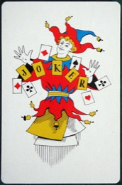 джокер (карта) |
1. шутник, весельчак 2. джокер (игральная карта) 3. (разг., пренебр.) несерьёзный человек, «клоун» (кого не воспринимают всерьёз) | 1. He's the joker of the group, always making everyone laugh. 2. In poker, the joker can replace any card. 3. They thought we were jokers, but we proved them wrong. | 1. Он весельчак компании, всегда всех смешит. 2. В покере джокер может заменить любую карту. 3. Они думали, что мы несерьёзные (клоуны), но мы доказали обратное. | |
| 5 | prosperity [prɑːˈsperəti] |
— абстрактное | процветание, благополучие, преуспевание (прил. prosperous — процветающий, зажиточный) | 1. The country enjoyed years of peace and prosperity. 2. Hard work brought them prosperity. | 1. Страна наслаждалась годами мира и процветания. 2. Упорный труд принёс им благополучие. | |
| 6 | to inherit [ɪnˈherɪt] |
— абстрактное | 1. наследовать, унаследовать (деньги, имущество) 2. унаследовать (черты, качества — от родителей) (сущ. inheritance — наследство) | 1. She inherited a house from her grandmother. 2. He inherited his father's blue eyes. | 1. Она унаследовала дом от бабушки. 2. Он унаследовал голубые глаза отца. | |
| 7 | listed [ˈlɪstɪd] |
— абстрактное | 1. включённый в список, перечисленный 2. (финансы) котирующийся на бирже, публичный (a listed company — публичная компания) | 1. All the ingredients are listed on the package. 2. Most of our businesses are not listed yet. | 1. Все ингредиенты перечислены на упаковке. 2. Большинство наших компаний ещё не вышли на биржу (не публичные). | |
| 8 | to wear out [weər aʊt] |
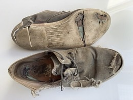 износиться (обувь) |
1. изнашивать(ся), снашивать (обувь, вещи) 2. изматывать, выматывать, утомлять (кого-то) | 1. These shoes wore out after a month. 2. They know how to wear people out in negotiations. | 1. Эти туфли износились через месяц. 2. Они умеют выматывать людей на переговорах. | |
| 9 | backward [ˈbækwərd] |
— абстрактное | 1. назад, обратный (направление) 2. отсталый (регион, взгляды) (backward integration — обратная интеграция: покупка своих поставщиков) | 1. He took a step backward. 2. The company used backward integration to buy its suppliers. | 1. Он сделал шаг назад. 2. Компания применила обратную интеграцию, чтобы купить своих поставщиков. | |
| 10 | mutual [ˈmjuːtʃuəl] |
— абстрактное | 1. взаимный, обоюдный (mutual respect — взаимное уважение) 2. общий, совместный (a mutual friend — общий друг) (mutual fund — взаимный / паевой инвестфонд) | 1. They have a mutual respect for each other. 2. A mutual fund pools money from many investors. | 1. Они испытывают взаимное уважение друг к другу. 2. Паевой (взаимный) фонд объединяет деньги многих инвесторов. | |
| 11 | dough [doʊ] |
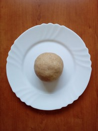 тесто |
1. тесто (для хлеба, пиццы) 2. (сленг) деньги, бабки, бабло | 1. She kneaded the dough for the bread. 2. He made a lot of dough in real estate. | 1. Она замесила тесто для хлеба. 2. Он сделал кучу денег на недвижимости. | |
| 12 | grand [ɡrænd] |
— абстрактное | 1. грандиозный, великолепный, величественный 2. (сленг) тысяча (долларов) — a grand = «штука» 3. (юр.) крупный (grand theft — крупная кража, тяжкое хищение) | 1. They live in a grand old house. 2. The car cost me twenty grand. 3. He was charged with grand theft auto. | 1. Они живут в величественном старом доме. 2. Машина обошлась мне в двадцать тысяч. 3. Его обвинили в угоне автомобиля (крупной краже авто). | |
| 13 | theft [θeft] |
— абстрактное | кража, хищение, воровство (глагол to steal — красть; вор — thief) | 1. He was arrested for theft. 2. Grand theft auto means stealing a car. | 1. Его арестовали за кражу. 2. «Grand theft auto» означает угон (кражу) автомобиля. | |
| 14 | compromise [ˈkɑːmprəmaɪz] |
— абстрактное | 1. компромисс; идти на компромисс, находить компромисс 2. поступаться (принципами), идти на уступки в ущерб себе 3. скомпрометировать, поставить под угрозу (безопасность, репутацию) | 1. They reached a compromise after long talks. 2. Never compromise your values for money. 3. The data breach compromised millions of accounts. | 1. После долгих переговоров они пришли к компромиссу. 2. Никогда не поступайся своими ценностями ради денег. 3. Утечка данных поставила под угрозу миллионы аккаунтов. | |
| 15 | unquestionably [ʌnˈkwestʃənəbli] |
— абстрактное | несомненно, бесспорно, безусловно (прил. unquestionable — бесспорный, несомненный) | 1. She is unquestionably the best in her field. 2. This is unquestionably the right decision. | 1. Она бесспорно лучшая в своей области. 2. Это несомненно верное решение. | |
| 16 | intersection [ˌɪntərˈsekʃən] |
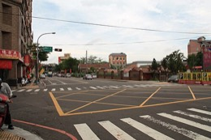 перекрёсток |
1. перекрёсток (пересечение дорог) 2. пересечение (точка, где сходятся две области/вещи) | 1. Turn left at the next intersection. 2. Success lies at the intersection of talent and hard work. | 1. Поверни налево на следующем перекрёстке. 2. Успех лежит на пересечении таланта и упорного труда. | |
| 17 | escrow account [ˈeskroʊ əˌkaʊnt] |
— абстрактное | счёт эскроу, депонированный счёт (нейтральная третья сторона держит деньги до выполнения условий сделки) | 1. The buyer's money is held in an escrow account until the deal closes. 2. We use an escrow account to protect both sides. | 1. Деньги покупателя хранятся на счёте эскроу до закрытия сделки. 2. Мы используем счёт эскроу, чтобы защитить обе стороны. | |
| 18 | downside [ˈdaʊnsaɪd] |
— абстрактное | 1. минус, недостаток, обратная (отрицательная) сторона 2. (финансы) риск падения, потенциал убытка (≠ upside — плюс) | 1. The downside of the job is the long hours. 2. Every investment has some downside. | 1. Минус этой работы — долгие часы. 2. У любой инвестиции есть риск убытка. | |
| 19 | opponent [əˈpoʊnənt] |
— абстрактное | противник, соперник, оппонент (в споре, игре, бою) (≠ proponent — сторонник; pro- = за, op- = против) | 1. She beat her opponent in the final. 2. He is a strong opponent of the new law. | 1. Она победила соперницу в финале. 2. Он ярый противник нового закона. | |
| 20 | to knead [niːd] (k не читается) |
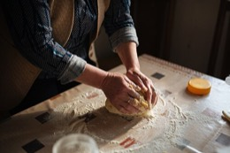 месить тесто |
месить, разминать (тесто; мышцы при массаже) (омофон: need — нуждаться) | 1. Knead the dough for ten minutes. 2. The massage therapist kneaded my shoulders. | 1. Меси тесто десять минут. 2. Массажист разминал мне плечи. | |
| 21 | to knit [nɪt] (k не читается) |
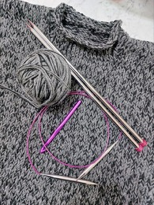 вязать спицами |
вязать (спицами) (a knitted sweater — вязаный свитер) | 1. My grandmother knits warm socks. 2. She is knitting a sweater. | 1. Моя бабушка вяжет тёплые носки. 2. Она вяжет свитер. | |
| 22 | to be up to speed [ʌp tə spiːd] · идиома |
— абстрактное | быть в курсе / в теме; владеть актуальной информацией (get someone up to speed — ввести кого-то в курс дела) | 1. Are you up to speed on the project? 2. Let me get you up to speed. | 1. Ты в курсе дел по проекту? 2. Давай я введу тебя в курс дела. | |
| 23 | to catch up / caught up [kætʃ ʌp] · [kɔːt ʌp] |
— абстрактное | 1. догнать (кого-то впереди) 2. наверстать (упущенное); быть в курсе (caught [kɔːt] — прош. время; НЕ cough [kɒf] — кашлять!) | 1. Run faster to catch up with them. 2. Are you caught up on the news? | 1. Беги быстрее, чтобы их догнать. 2. Ты в курсе новостей? | |
| 24 | to blow money / blow it [bloʊ] |
— абстрактное | 1. to blow money — просаживать / спускать деньги (тратить впустую) 2. to blow it — провалить, упустить (шанс), «облажаться» | 1. He blew all his money on gambling. 2. Don't blow it — this is your big chance. | 1. Он спустил все деньги на азартные игры. 2. Не облажайся — это твой большой шанс. | |
| 25 | outskirts [ˈaʊtskɜːrts] |
— абстрактное | окраина (города), предместья (обычно мн. ч.) | 1. They live on the outskirts of Atlanta. 2. The factory is on the outskirts of town. | 1. Они живут на окраине Атланты. 2. Завод на окраине города. | |
| 26 | nonetheless [ˌnʌnðəˈles] |
— абстрактное | тем не менее, всё же, несмотря на это (= nevertheless) | 1. It was hard; nonetheless, she finished. 2. The plan is risky but worth it nonetheless. | 1. Было трудно; тем не менее она закончила. 2. План рискованный, но всё же стоящий. | |
| 27 | encryption [ɪnˈkrɪpʃən] |
— абстрактное | шифрование (защита данных кодом) (глагол to encrypt — шифровать; ≠ decrypt — расшифровывать) | 1. He owns an encryption company. 2. Strong encryption protects your messages. | 1. Ему принадлежит компания по шифрованию. 2. Надёжное шифрование защищает твои сообщения. | |
| 28 | to get shot [ɡet ʃɑːt] |
— абстрактное | быть застреленным / раненым, получить пулю (to shoot — стрелять; shot — прош. форма и «выстрел») | 1. You might even get shot in a war. 2. He got shot in the leg. | 1. На войне тебя могут даже застрелить. 2. Его ранили в ногу (подстрелили). | |
| 29 | to parlay [ˈpɑːrleɪ] |
— абстрактное | превратить (что-то небольшое) в нечто большее; приумножить, развить (успех/актив) во что-то крупное (≠ parley [ˈpɑːli] — переговоры с врагом) | 1. He parlayed a small loan into a huge business. 2. She parlayed her fame into a political career. | 1. Он превратил небольшой заём в огромный бизнес. 2. Она использовала свою известность, чтобы построить политическую карьеру. | |
| 30 | undergrad [ˈʌndərɡræd] |
— абстрактное | студент-бакалавр; бакалавриат (первое высшее, до диплома) (полн. undergraduate; ≠ postgrad — магистратура/аспирантура) | 1. They paid for my undergrad. 2. She's an undergrad at Harvard. | 1. Они оплатили моё обучение в бакалавриате. 2. Она студентка бакалавриата в Гарварде. | |
| 31 | shovel [ˈʃʌvl] |
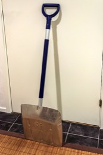 лопата |
лопата (совковая); (глагол) копать / разгребать лопатой | 1. He dug the hole with a shovel. 2. In a gold rush, sell shovels. | 1. Он выкопал яму лопатой. 2. Во время золотой лихорадки продавай лопаты. (смысл: зарабатывай на инструментах, а не на золоте) | |
| 32 | Rolodex [ˈroʊlədeks] |
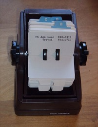 Rolodex (картотека контактов) |
вращающаяся картотека контактов; (перен.) круг связей, список знакомых/контактов | 1. He has a lot of rich people in his Rolodex. 2. A good Rolodex opens doors. | 1. В его записной книжке (в связях) много богатых людей. 2. Хорошие связи открывают двери. | |
| 33 | craft [kræft] |
— абстрактное | 1. ремесло, мастерство (навык ручной работы) 2. ремесленное изделие; рукоделие 3. (глагол) искусно создавать, мастерить 4. судно (лодка, самолёт — a craft) | 1. He is passionate about his craft. 2. She crafts beautiful jewelry by hand. | 1. Он увлечён своим ремеслом (мастерством). 2. Она искусно делает украшения вручную. | |
| 34 | to jingle / jingling [ˈdʒɪŋɡl] |
— абстрактное | звенеть, звякать (монеты, ключи, бутылки, колокольчики) (a jingle — короткая звонкая мелодия, «джингл» в рекламе) | 1. The bottles are jingling in the bag. 2. Coins jingled in his pocket. | 1. Бутылки звякают в сумке. 2. Монеты звенели у него в кармане. | |
| 35 | to streamline / streamlining [ˈstriːmlaɪn] |
— абстрактное | оптимизировать, упрощать, делать эффективнее (убирать лишнее из процесса) | 1. We streamlined the hiring process. 2. Streamlining the workflow saves time. | 1. Мы оптимизировали процесс найма. 2. Упрощение рабочего процесса экономит время. | |
| 36 | red tape [red teɪp] |
— абстрактное | бюрократия, бюрократическая волокита (лишние формальности, правила, «бумажки») | 1. There's too much red tape to start a business. 2. We're streamlining all of the red tape. | 1. Слишком много бюрократии, чтобы начать бизнес. 2. Мы упрощаем всю бюрократическую волокиту. | |
| 37 | to cherish [ˈtʃerɪʃ] |
— абстрактное | дорожить, ценить, беречь; лелеять (нежно хранить) | 1. Relationships are so important — cherish them. 2. I cherish every moment with my family. | 1. Отношения так важны — дорожи ими. 2. Я дорожу каждым мгновением с семьёй. | |
| 38 | to befriend [bɪˈfrend] |
— абстрактное | подружиться с (кем-то); отнестись по-дружески, взять под опеку (be- + friend = «сделать другом») | 1. He befriended the new student. 2. Try to befriend successful people. | 1. Он подружился с новым учеником. 2. Старайся заводить дружбу с успешными людьми. | |
| 39 | essentially [ɪˈsenʃəli] |
— абстрактное | по сути, по существу, в сущности (= basically) | 1. It's essentially the same thing. 2. The plan is essentially finished. | 1. По сути, это одно и то же. 2. План по существу готов. | |
| 40 | one-stop shop [wʌn stɑːp ʃɑːp] |
— абстрактное | «всё в одном»; место/сервис, где получаешь всё сразу (не нужно ходить в разные места) | 1. This company is a one-stop shop for all entrepreneurs. 2. Our app is a one-stop shop for travel. | 1. Эта компания — универсальное решение (всё в одном) для всех предпринимателей. 2. Наше приложение — всё для путешествий в одном месте. | |
| 41 | orphan [ˈɔːrfən] |
— абстрактное | сирота (ребёнок без родителей) (orphanage — детский дом, приют) | 1. My mom was an orphan. 2. The war left many children as orphans. | 1. Моя мама была сиротой. 2. Война оставила многих детей сиротами. | |
| 42 | fulfilled / fulfilling [fʊlˈfɪld] |
— абстрактное | 1. (о человеке) реализованный, глубоко удовлетворённый (жизнью, делом) 2. выполненный (to fulfil a promise / dream — исполнить обещание / мечту) | 1. She feels extremely fulfilled in her work. 2. He fulfilled his childhood dream. | 1. Она чувствует глубокое удовлетворение от своей работы. 2. Он осуществил свою детскую мечту. | |
| 43 | to emulate [ˈemjʊleɪt] |
— абстрактное | 1. подражать, брать пример, стремиться сравняться (с кем-то успешным) 2. (тех.) эмулировать (воспроизводить работу другой системы) | 1. Young athletes try to emulate their heroes. 2. This app emulates an old computer. | 1. Юные спортсмены стараются подражать своим кумирам. 2. Это приложение эмулирует старый компьютер. | |
| 44 | tenure [ˈtenjər] |
— абстрактное | 1. срок пребывания в должности (during his tenure as CEO) 2. (в универе) бессрочная профессорская должность, «несменяемость» (постоянный контракт) | 1. During her tenure, the company doubled. 2. The professor was granted tenure. | 1. За время её руководства компания удвоилась. 2. Профессору предоставили бессрочную должность. | |
| 45 | proximity [prɑːkˈsɪməti] |
— абстрактное | близость (расположение рядом), соседство (in close proximity to — в непосредственной близости к) | 1. The hotel's proximity to the beach is great. 2. They sat in close proximity. | 1. Близость отеля к пляжу — это здорово. 2. Они сидели совсем рядом. | |
| 46 | pier [pɪr] |
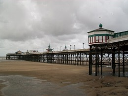 пирс (причал) |
пирс, причал, мол (сооружение, выступающее в воду) (омофон: peer — ровесник; вглядываться) | 1. Look at this entire pier. 2. We walked along the pier at sunset. | 1. Посмотри на весь этот пирс. 2. Мы гуляли по пирсу на закате. | |
| 47 | ladder [ˈlædər] |
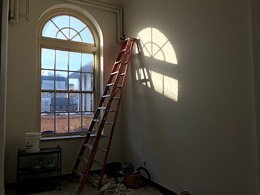 лестница (стремянка) |
1. лестница (приставная, стремянка) 2. (перен.) карьерная / социальная лестница (career ladder, social ladder) | 1. He climbed the ladder to fix the roof. 2. I never had a ladder to go up in life. | 1. Он залез по лестнице чинить крышу. 2. У меня никогда не было «лестницы», чтобы подняться (в жизни). | |
| 48 | to pamper [ˈpæmpər] |
— абстрактное | баловать, нежить, холить, окружать роскошной заботой (бренд подгузников Pampers — от этого слова) | 1. Everyone likes to be pampered. 2. She pampered herself with a spa day. | 1. Всем нравится, когда их балуют (нежат). 2. Она побаловала себя днём в спа. | |
| 49 | gambling [ˈɡæmblɪŋ] |
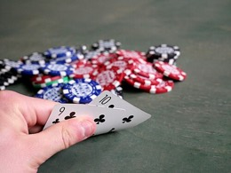 покер (азартные игры) |
азартные игры (ставки на деньги) (глагол to gamble — играть на деньги; рисковать) | 1. He lost all his money on gambling. 2. Gambling can become an addiction. | 1. Он потерял все деньги на азартных играх. 2. Азартные игры могут стать зависимостью. | |
| 50 | orphanage [ˈɔːrfənɪdʒ] |
— абстрактное | детский дом, приют (для сирот) (от orphan — сирота) | 1. She grew up in an orphanage. 2. They donated money to a local orphanage. | 1. Она выросла в детском доме. 2. Они пожертвовали деньги местному приюту. | |
| 51 | to dig / dug [dɪɡ] · [dʌɡ] |
— абстрактное | копать, рыть (dug — прош. время) (to dig up — выкапывать; глагол-действие) | 1. He dug a hole with a shovel. 2. The dog dug up a bone. | 1. Он выкопал яму лопатой. 2. Собака выкопала кость. | |
| 52 | net worth [net wɜːrθ] |
— абстрактное | чистый капитал, чистое состояние (всё имущество минус все долги) | 1. His net worth is over a billion dollars. 2. She calculated her net worth. | 1. Его состояние — более миллиарда долларов. 2. Она подсчитала свой чистый капитал. | |
| 53 | crypt [krɪpt] |
склеп (крипта под храмом) | склеп, крипта (подземное помещение под церковью, где хоронят) (тот же корень crypt- = скрытый, как в encryption) | 1. The king is buried in a crypt beneath the church. 2. They walked down into the dark crypt. | 1. Король похоронен в склепе под церковью. 2. Они спустились в тёмный склеп. | |
| 54 | to revert [rɪˈvɜːrt] |
— абстрактное | вернуть(ся) к прежнему состоянию; откатить изменения (revert to — вернуться к чему-то) | 1. Please revert the changes to the file. 2. After the update failed, we reverted to the old version. | 1. Пожалуйста, откати изменения в файле. 2. После неудачного обновления мы вернулись к старой версии. | |
| 55 | frugal [ˈfruːɡl] |
— абстрактное | экономный, бережливый (тратит мало и разумно) (сущ. frugality — бережливость) | 1. Despite being rich, he is very frugal. 2. A frugal lifestyle helped her save a lot. | 1. Несмотря на богатство, он очень экономный. 2. Бережливый образ жизни помог ей много накопить. | |
| 56 | to undo [ʌnˈduː] |
— абстрактное | 1. отменить (действие), вернуть назад (Ctrl+Z = undo) 2. расстегнуть, развязать (undo a button) | 1. Press Ctrl+Z to undo the last change. 2. You can't undo what's already done. | 1. Нажми Ctrl+Z, чтобы отменить последнее изменение. 2. Нельзя отменить то, что уже сделано. | |
| 57 | overhead [ˈoʊvərhed] |
— абстрактное | 1. накладные расходы (аренда, зарплаты, счета — постоянные затраты бизнеса) 2. (нареч.) над головой, наверху (overhead lights) | 1. High overhead is killing our profit. 2. A plane flew overhead. | 1. Высокие накладные расходы съедают нашу прибыль. 2. Над головой пролетел самолёт. | |
| 58 | runway [ˈrʌnweɪ] |
— абстрактное | 1. (бизнес) запас денег стартапа — на сколько времени хватит до нуля 2. взлётно-посадочная полоса (для самолётов) 3. подиум (показ мод — твоя ассоциация с «Devil Wears Prada»!) | 1. The startup has six months of runway left. 2. Models walked down the runway. | 1. У стартапа осталось денег на полгода работы. 2. Модели прошли по подиуму. | |
| 59 | bottleneck [ˈbɑːtlnek] |
— абстрактное | узкое место, «бутылочное горлышко» (что тормозит весь процесс) (букв. горлышко бутылки — где всё застревает) | 1. Slow approvals are the bottleneck in our process. 2. The single cashier created a bottleneck. | 1. Медленные согласования — узкое место в нашем процессе. 2. Один кассир создал затор. | |
| 60 | windfall [ˈwɪndfɔːl] |
— абстрактное | неожиданная удача/прибыль, «свалившиеся» деньги (наследство, выигрыш, бонус) (букв. плод, сбитый ветром — упал сам, без усилий) | 1. She got a windfall from an unexpected inheritance. 2. The tax refund was a nice windfall. | 1. Ей неожиданно свалилось наследство. 2. Возврат налога стал приятным нежданным доходом. |
| # | Word | 🖼 Картинки | Значение | Примеры | Перевод примеров | Повт. |
|---|---|---|---|---|---|---|
| 1 | peer [pɪr] |
— абстрактное | 1. ровесник, равный (по статусу/возрасту) — peer pressure, peer review 2. (глагол) вглядываться, всматриваться (омофон: pier — пирс!) | 1. Teenagers care about their peers' opinions. 2. She peered into the dark room. | 1. Подросткам важно мнение ровесников. 2. Она вгляделась в тёмную комнату. | |
| 2 | to gamble [ˈɡæmbl] |
— абстрактное | 1. играть в азартные игры (на деньги) 2. рисковать, ставить на кон (сущ. gambling — азартные игры) | 1. He gambled away his savings. 2. She gambled everything on one idea. | 1. Он проиграл (в азартных играх) свои сбережения. 2. Она поставила всё на одну идею. | |
| 3 | frugality [fruːˈɡæləti] |
— абстрактное | бережливость, экономность (сущ. от frugal) | 1. Her frugality helped her retire early. 2. Frugality is a habit, not a punishment. | 1. Её бережливость помогла ей рано выйти на пенсию. 2. Бережливость — это привычка, а не наказание. | |
| 4 | to dig up [dɪɡ ʌp] |
— абстрактное | 1. выкапывать (из земли) 2. раскопать, разузнать (информацию) | 1. The dog dug up an old bone. 2. Journalists dug up the truth. | 1. Собака выкопала старую кость. 2. Журналисты раскопали правду. | |
| 5 | to unbutton / unzip / untie [ʌnˈbʌtn] · [ʌnˈzɪp] · [ʌnˈtaɪ] |
— абстрактное | расстёгивать (пуговицы) / расстёгивать (молнию) / развязывать (шнурки, узел) (un- = отменить действие; ср. undo) | 1. He unbuttoned his coat. 2. She unzipped her bag. 3. Untie your shoelaces. | 1. Он расстегнул пальто. 2. Она расстегнула сумку. 3. Развяжи шнурки. | |
| 6 | take the stairs / go upstairs [sterz] · [ˌʌpˈsterz] |
— абстрактное | пойти по лестнице (не на лифте) / подняться наверх (этажом выше) (≠ ladder — приставная лестница!) | 1. I take the stairs instead of the elevator. 2. She went upstairs to sleep. | 1. Я хожу по лестнице вместо лифта. 2. Она поднялась наверх спать. | |
| 7 | staircase [ˈsterkeɪs] |
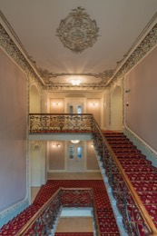 лестница (в здании) |
лестница (пролёт/конструкция в здании) | 1. A grand staircase led to the hall. 2. She ran down the staircase. | 1. Парадная лестница вела в зал. 2. Она сбежала по лестнице. | |
| 8 | upside down [ˌʌpsaɪd ˈdaʊn] |
— абстрактное | вверх дном, вверх ногами, перевёрнутый (turn one's world upside down — перевернуть жизнь) | 1. The painting is hanging upside down. 2. The news turned her world upside down. | 1. Картина висит вверх ногами. 2. Новость перевернула её жизнь. | |
| 9 | to shuffle [ˈʃʌfl] |
— абстрактное | 1. тасовать (карты); перемешивать (в случайном порядке) 2. шаркать (ногами); переминаться | 1. Shuffle the cards before dealing. 2. He shuffled through the papers. | 1. Перетасуй карты перед раздачей. 2. Он перебирал бумаги. | |
| 10 | credentials [krəˈdenʃlz] |
— абстрактное | 1. удостоверение, документы, допуск (подтверждают личность/право входа) 2. квалификация, послужной список | 1. You can't go there if you don't have credentials. 2. She has strong credentials in finance. | 1. Тебя туда не пустят без допуска/документов. 2. У неё солидная квалификация в финансах. | |
| 11 | to blow off [bloʊ ɔːf] |
— абстрактное | 1. отшить, продинамить, проигнорировать («слить» кого-то) 2. blow off steam — выпустить пар (снять напряжение) | 1. He blew me off and didn't call back. 2. I went for a run to blow off steam. | 1. Он меня продинамил и не перезвонил. 2. Я пошёл на пробежку, чтобы выпустить пар. | |
| 12 | liquidity [lɪˈkwɪdəti] |
— абстрактное | ликвидность (насколько быстро актив можно превратить в наличные) (прил. liquid — ликвидный; жидкий) | 1. Cash is the most liquid asset. 2. The company needs more liquidity. | 1. Наличные — самый ликвидный актив. 2. Компании нужно больше ликвидности. | |
| 13 | untapped [ˌʌnˈtæpt] |
— абстрактное | неиспользованный, незадействованный, нераскрытый (потенциал, рынок, ресурс) | 1. There is untapped potential and scale in this market. 2. He has untapped talent. | 1. На этом рынке есть неиспользованный потенциал и масштаб. 2. У него нераскрытый талант. | |
| 14 | to recede [rɪˈsiːd] |
— абстрактное | отступать, отходить, убывать; идти на убыль (о воде, волосах, угрозе) (родственно recession — спад, рецессия) | 1. The floodwater slowly receded. 2. His hairline is receding. | 1. Паводок медленно отступал. 2. У него редеет линия волос (лысеет со лба). | |
| 15 | to BS (someone) [ˌbiːˈes] |
— абстрактное | (груб. сленг) вешать лапшу, нести чушь, врать (BS = bullshit; stop BSing — хватит вешать лапшу) | 1. Stop BSing people and tell the truth. 2. He's just BSing to sound smart. | 1. Хватит людям вешать лапшу, скажи правду. 2. Он просто несёт чушь, чтобы казаться умным. | |
| 16 | inauthenticity [ˌɪnɔːθenˈtɪsəti] |
— абстрактное | неискренность, фальшь, поддельность (противоположность authenticity; прил. inauthentic — неискренний) | 1. No one likes inauthenticity. 2. Inauthenticity destroys trust. | 1. Никто не любит фальшь. 2. Неискренность разрушает доверие. | |
| 17 | exotic / neurotic / psychotic [ɪɡˈzɑːtɪk] · [nʊˈrɑːtɪk] · [saɪˈkɑːtɪk] |
— уже знакомы | exotic — экзотический, диковинный (из далёких мест) neurotic — невротичный, тревожный (neurosis — невроз) psychotic — психотический, невменяемый; (разг.) «поехавший» (psychosis — психоз) | 1. They tried exotic fruits on the trip. 2. He's neurotic about being on time. 3. That was a psychotic thing to do. | 1. В поездке они пробовали экзотические фрукты. 2. Он до нервозности помешан на пунктуальности. 3. Это был безумный поступок. | |
| 18 | wire [waɪər] |
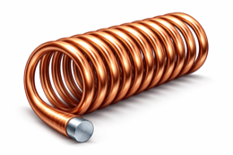 провод / проволока |
1. провод, проволока 2. канат / трос (в цирке — high wire, tightrope) 3. (глагол) перевести деньги банковским переводом (wire money; a wire transfer) | 1. Please wire the money to my account. 2. The acrobat walked on a high wire. | 1. Переведи, пожалуйста, деньги на мой счёт. 2. Акробат шёл по канату. | |
| 19 | overdue [ˌoʊvərˈduː] |
— абстрактное | 1. просроченный (платёж, книга в библиотеке) 2. запоздалый; «давно пора» (о встрече, событии) | 1. We're overdue for a catch-up — send me a text! 2. The rent is two weeks overdue. | 1. Нам давно пора встретиться — напиши мне! 2. Аренда просрочена на две недели. | |
| 20 | quarterback [ˈkwɔːrtərbæk] |
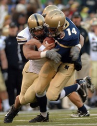 квотербек (амер. футбол) |
1. квотербек (ключевой игрок в амер. футболе — руководит атакой) 2. (перен., глагол) руководить, координировать (проект) | 1. The quarterback threw the winning pass. 2. She quarterbacked the whole launch. | 1. Квотербек отдал победный пас. 2. Она руководила всем запуском. | |
| 21 | relentless [rɪˈlentləs] |
— абстрактное | неустанный, неумолимый, упорный (не сдаётся, не ослабевает) | 1. He is a relentless founder. 2. The pressure was relentless. | 1. Он неустанный, упорный основатель. 2. Давление было беспощадным. | |
| 22 | contrarian [kənˈtreriən] |
— абстрактное | контрарианец; тот, кто идёт против общего мнения (думает наоборот) | 1. He's a contrarian — he buys when others sell. 2. She takes a contrarian view. | 1. Он контрарианец: покупает, когда другие продают. 2. У неё мнение, противоположное большинству. | |
| 23 | alignment [əˈlaɪnmənt] |
— абстрактное | 1. согласованность, единство (целей, взглядов) — «на одной волне» 2. выравнивание, расположение по одной линии (глагол to align — согласовывать; выравнивать) | 1. The team is in alignment on the goals. 2. We need alignment between sales and marketing. 3. My car needs a wheel alignment. | 1. Команда едина в целях. 2. Нам нужна согласованность между продажами и маркетингом. 3. Моей машине нужен развал-схождение колёс. | |
| 24 | doorbell / camera doorbell [ˈdɔːrbel] |
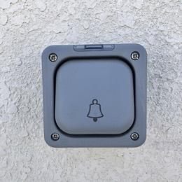 дверной звонок |
дверной звонок / видеозвонок (умный звонок с камерой) (домофон = intercom; видеодомофон = video intercom) | 1. Someone rang the doorbell. 2. A camera doorbell shows who's at the door. | 1. Кто-то позвонил в дверь. 2. Видеозвонок показывает, кто стоит у двери. | |
| 25 | friction [ˈfrɪkʃn] |
— абстрактное | 1. трение (физика) 2. (перен.) трения, разногласия; препятствие/затруднение в процессе (remove the friction — убрать препятствия, сделать проще) | 1. Remove the friction from the checkout process. 2. There was friction between the partners. | 1. Убери препятствия в процессе оформления заказа. 2. Между партнёрами были трения. | |
| 26 | contradictory [ˌkɑːntrəˈdɪktəri] |
— абстрактное | противоречивый (сам себе противоречащий, взаимоисключающий) (≠ contrarian — «идущий против толпы») | 1. His statements were contradictory. 2. The two reports are contradictory. | 1. Его заявления были противоречивы. 2. Два отчёта противоречат друг другу. | |
| 27 | conflicting [kənˈflɪktɪŋ] |
— абстрактное | противоречивый, взаимоисключающий (о данных, чувствах, интересах) | 1. We received conflicting information. 2. She had conflicting emotions. | 1. Мы получили противоречивую информацию. 2. У неё были противоречивые чувства. | |
| 28 | controversial [ˌkɑːntrəˈvɜːrʃəl] |
— абстрактное | спорный, вызывающий споры/разногласия | 1. It was a controversial decision. 2. He is a controversial figure. | 1. Это было спорное решение. 2. Он спорная/неоднозначная фигура. | |
| 29 | to thrust / thrusting [θrʌst] |
— абстрактное | 1. толкать, вонзать, резко двигать вперёд; толчок 2. толчковые/поступательные движения 3. (перен.) суть, главная мысль (the thrust of the argument); тяга двигателя | 1. He thrust the sword forward. 2. The thrust of her speech was clear. 3. The engine produces huge thrust. | 1. Он вонзил/толкнул меч вперёд. 2. Суть её речи была ясна. 3. Двигатель создаёт огромную тягу. | |
| 30 | to grind / grinding [ɡraɪnd] |
— абстрактное | 1. молоть, перемалывать, измельчать (grind coffee) 2. скрежетать (grind one's teeth) 3. тереться, круговые движения (в танце) 4. (перен.) изнурительный; the daily grind — рутина, «пахота» (grinder — трудяга «пахарь» ИЛИ кофемолка/точило — см. обсуждение) | 1. Grind the beans finely. 2. He grinds his teeth at night. 3. grinding poverty / the daily grind. | 1. Смели зёрна мелко. 2. Он скрежещет зубами по ночам. 3. беспросветная нищета / ежедневная рутина. | |
| 31 | to rub / rubbing [rʌb] |
— абстрактное | тереть, натирать; трение (более общее слово, чем friction) | 1. She rubbed her eyes. 2. Rubbing two sticks together makes fire. | 1. Она потёрла глаза. 2. Трение двух палочек рождает огонь. | |
| 32 | intercom [ˈɪntərkɑːm] |
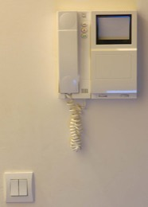 домофон |
домофон; переговорное устройство (внутренняя связь в здании/офисе/самолёте) | 1. She buzzed me in through the intercom. 2. The captain spoke over the intercom. | 1. Она впустила меня через домофон. 2. Капитан говорил по внутренней связи. | |
| 33 | bond [bɑːnd] |
— абстрактное | 1. связь, узы (emotional bond) 2. облигация (финансы) 3. обязательство, гарантия, залог; your word is your bond — «сказал — сделай» 4. клей, связка (James Bond — просто имя, не связано!) | 1. There is a strong bond between them. 2. He invested in government bonds. 3. Your word is your bond. | 1. Между ними крепкая связь. 2. Он вложился в гособлигации. 3. Слово — это обязательство (держи слово). | |
| 34 | scorecard [ˈskɔːrkɑːrd] |
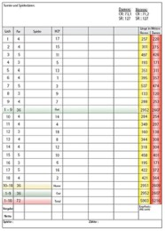 карточка счёта (гольф) |
1. карточка счёта (в спорте, гольфе) 2. (перен.) мерило/показатель успеха; money is just a scorecard — деньги лишь способ «вести счёт» | 1. He checked the scorecard after the round. 2. To him, money is just a scorecard. | 1. Он посмотрел карточку счёта после раунда. 2. Для него деньги — просто способ вести счёт (показатель). | |
| 35 | to bring up / brought up [brɔːt ʌp] |
— абстрактное | 1. воспитывать, растить (born and brought up) 2. поднимать (тему, вопрос) 3. (BrE) вырвать (= throw up) | 1. I was born and brought up in Kyiv. 2. Don't bring up that topic. | 1. Я родился и вырос в Киеве. 2. Не поднимай эту тему. | |
| 36 | ache / aches and pains [eɪk] |
— абстрактное | ache — ноющая, тупая боль (headache, toothache, backache) aches and pains — мелкие болячки, недомогания | 1. I don't worry about little aches and pains. 2. My muscles ache after the gym. | 1. Я не переживаю из-за мелких болячек. 2. Мышцы ноют после спортзала. | |
| 37 | to hit the lotto / lotto [ˈlɑːtoʊ] |
— абстрактное | lotto — лото, лотерея to hit the lotto — сорвать куш, «выиграть в лотерею» (о большой удаче/деньгах) | 1. He acts like he hit the lotto. 2. Winning that deal was like hitting the lotto. | 1. Он ведёт себя так, будто сорвал куш. 2. Та сделка была как выигрыш в лотерею. | |
| 38 | keen [kiːn] |
— абстрактное | 1. увлечённый, страстно желающий; keen on smth — увлечён; keen to do — очень хотеть 2. острый (keen eye/mind/sense of humour) 3. сильный, интенсивный (keen interest) | 1. She's keen to learn English. 2. He has a keen eye for detail. 3. There's keen interest in the project. | 1. Она очень хочет учить английский. 2. У него острый глаз на детали. 3. К проекту большой интерес. | |
| 39 | to dial / smiling and dialing [ˈdaɪəl] |
— абстрактное | dial — набирать номер (телефона) smiling and dialing — сленг продаж: активный обзвон клиентов «с улыбкой» (холодные звонки) | 1. Dial the number. 2. Sales is just smiling and dialing. | 1. Набери номер. 2. Продажи — это просто обзвон «с улыбкой». | |
| 40 | headquarters (HQ) [ˈhedˌkwɔːrtərz] |
— абстрактное | головной офис, штаб-квартира, штаб (✅ ты права!). Часто сокращают HQ. | 1. The company's headquarters is in New York. 2. They flew me to headquarters. | 1. Головной офис компании в Нью-Йорке. 2. Меня отправили в штаб-квартиру. | |
| 41 | facility [fəˈsɪləti] |
— абстрактное | 1. объект, здание, предприятие (a manufacturing facility) 2. facilities — удобства, помещения (bathroom facilities) 3. лёгкость, способность (speak with facility) | 1. We are going to see the facility. 2. The building has modern facilities. | 1. Мы едем осмотреть объект/предприятие. 2. В здании современные удобства. | |
| 42 | to get along [ɡet əˈlɔːŋ] |
— абстрактное | 1. ладить, уживаться (get along with someone) 2. справляться, продвигаться (how are you getting along?) (⚠️ не «get alone» — alone = один!) | 1. They get along well. 2. How are you getting along at work? | 1. Они хорошо ладят. 2. Как у тебя дела на работе (как справляешься)? | |
| 43 | to throw up / throwing up [θroʊ ʌp] |
— абстрактное | рвать, тошнить (вырвать); «блевать» | 1. He threw up after the ride. 2. I feel like throwing up. | 1. Его вырвало после аттракциона. 2. Меня тошнит (хочется вырвать). | |
| 44 | crew [kruː] |
бригада / съёмочная группа | 1. бригада, команда, экипаж (cleaning crew, film crew, ship's crew) 2. (сленг) компания, «своя тусовка» | 1. The cleaning crew arrives at 6. 2. He came with his whole crew. | 1. Бригада уборщиков приходит в 6. 2. Он пришёл со всей своей компанией. | |
| 45 | to bail out vs to ball out (ballin') [beɪl aʊt] · [bɔːl aʊt] |
— абстрактное | ⚠️ РАЗНЫЕ слова! bail out — 1. выручать, спасать (финансово); bailout — «спасательный пакет» 2. соскочить, слиться, выпрыгнуть (с парашютом) 3. вычерпывать воду ball out / ballin' — сленг: шиковать, жить на широкую ногу, сорить деньгами (от baller). В примере про Lamborghini — это ballin' out, а не bailing out! | 1. The government bailed out the bank. 2. He bailed on us last minute. 3. They're ballin' out — Lambos and champagne. | 1. Государство выручило банк. 2. Он слился в последний момент. 3. Они шикуют — Ламборгини и шампанское. | |
| 46 | centered [ˈsentərd] |
— абстрактное | уравновешенный, устойчивый, «в согласии с собой», сфокусированный (a well-centered person) | 1. She is a calm, centered person. 2. Meditation keeps me centered. | 1. Она спокойный, уравновешенный человек. 2. Медитация помогает мне сохранять внутренний баланс. | |
| 47 | stale [steɪl] |
— абстрактное | 1. чёрствый (stale bread) 2. затхлый (stale air) 3. (перен.) выдохшийся, застоявшийся, потерявший свежесть/интерес (you get stale) | 1. The bread went stale. 2. In business you can get stale and burn out. | 1. Хлеб зачерствел. 2. В бизнесе можно «выдохнуться» и перегореть. | |
| 48 | to storm / stormed [stɔːrm] |
— абстрактное | 1. штурмовать (stormed the beach on D-Day) 2. врываться / вылетать в ярости (stormed out of the room) 3. бушевать (о буре); storm (сущ.) — буря, шторм | 1. Soldiers stormed the beaches on D-Day. 2. She stormed out angrily. | 1. Солдаты штурмовали пляжи в День «Д». 2. Она в ярости вылетела из комнаты. | |
| 49 | D-Day [ˈdiː deɪ] |
— абстрактное | День «Д» — день высадки союзников в Нормандии (6 июня 1944); (перен.) решающий день, «день X» | 1. He stormed the beach on D-Day. 2. Tomorrow is D-Day for our launch. | 1. Он штурмовал пляж в День «Д». 2. Завтра решающий день нашего запуска. | |
| 50 | motorhead [ˈmoʊtərhed] |
— абстрактное | (сленг) автолюбитель, помешанный на машинах/моторах; «фанат тачек» | 1. I'm a huge motorhead. 2. My dad is a real motorhead — he rebuilds engines. | 1. Я обожаю машины (я заядлый автолюбитель). 2. Мой папа настоящий фанат тачек — он перебирает двигатели. | |
| 51 | memorabilia [ˌmemərəˈbɪliə] |
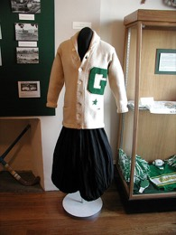 памятные вещи (витрина) |
памятные/коллекционные вещи (сувениры, автографы, атрибутика, связанные с человеком/событием). Корень тот же, что у memory/memorial (✅ твоя догадка верна). | 1. He collects sports memorabilia. 2. The room was full of movie memorabilia. | 1. Он коллекционирует спортивную атрибутику. 2. Комната была полна киносувениров. | |
| 52 | to append [əˈpend] |
— абстрактное | добавлять, присоединять (в конец); прикреплять (append a signature, append data) | 1. Append your name at the bottom. 2. The file was appended to the email. | 1. Допиши своё имя внизу. 2. Файл был прикреплён к письму. | |
| 53 | the daily grind [ˈdeɪli ɡraɪnd] |
— абстрактное | рутина, однообразная изматывающая работа, «лямка» (от to grind — молоть/пахать) | 1. I'm tired of the daily grind. 2. He escaped the daily grind and moved abroad. | 1. Я устала от каждодневной рутины. 2. Он вырвался из рутины и уехал за границу. | |
| 54 | modest [ˈmɑːdɪst] |
— абстрактное | 1. скромный (о человеке — не хвастливый) 2. скромный, небольшой (о размере/сумме — a modest salary) (сущ. modesty — скромность; ≈ humble) | 1. Despite his wealth, he's very modest. 2. They live in a modest house. | 1. Несмотря на богатство, он очень скромный. 2. Они живут в скромном домике. | |
| 55 | bail [beɪl] |
— абстрактное | 1. залог (внести залог, чтобы выйти из-под ареста — post bail) 2. (сленг) to bail — слиться, свалить, соскочить (bail on plans) (bail out — см. #48; выручать / выпрыгивать / вычерпывать воду) | 1. He was released on bail. 2. She bailed at the last minute. | 1. Его отпустили под залог. 2. Она слилась в последнюю минуту. | |
| 56 | glue [ɡluː] |
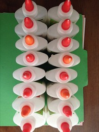 клей (карандаш) |
1. клей (сущ.) 2. клеить, приклеивать (глагол); glued to the screen — «прилип» к экрану | 1. Use glue to stick the paper. 2. The kids were glued to the TV. | 1. Используй клей, чтобы приклеить бумагу. 2. Дети «прилипли» к телевизору. | |
| 57 | to buzz [bʌz] |
— абстрактное | 1. жужжать (о пчеле/телефоне); гудеть 2. buzz someone in — впустить (нажать кнопку домофона) 3. (сущ.) a buzz — оживление, ажиотаж, «движ» | 1. My phone buzzed on the table. 2. She buzzed me in through the intercom. 3. There's a real buzz about the new place. | 1. Телефон завибрировал на столе. 2. Она впустила меня через домофон. 3. Вокруг нового места настоящий ажиотаж. | |
| 58 | sword [sɔːrd] (w немой, r произносится) |
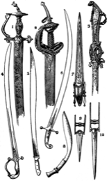 меч / шпага |
меч, шпага (⚠️ w не произносится: [сорд]) double-edged sword — палка о двух концах | 1. The knight drew his sword. 2. Fame is a double-edged sword. | 1. Рыцарь обнажил меч. 2. Слава — палка о двух концах. | |
| 59 | life ring / life buoy [laɪf rɪŋ] · [ˈlaɪf bɔɪ] |
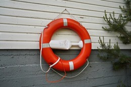 спасательный круг |
спасательный круг (кольцо, которое бросают тонущему) (ср. life jacket / life vest — спасательный жилет; lifeline — «спасательный круг» в переносном смысле) | 1. He threw the life ring to the drowning man. 2. There's a life buoy on the pier. | 1. Он бросил спасательный круг тонущему. 2. На пирсе есть спасательный круг. | |
| 60 | buoy [bɔɪ] / [ˈbuːi] (амер.) |
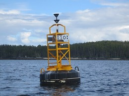 буй (на воде) |
1. буй, буёк (плавучий знак на воде) 2. (глагол) to buoy up — поддерживать, придавать бодрости/держать на плаву | 1. A red buoy marks the edge of the swimming area. 2. The good news buoyed her spirits. | 1. Красный буй отмечает край зоны для плавания. 2. Хорошая новость подняла ей настроение. |
| # | Word | 🖼 Картинки | Значение | Примеры | Перевод примеров | Повт. |
|---|---|---|---|---|---|---|
| 1 | life vest / life jacket [laɪf vɛst] · [laɪf ˈdʒækɪt] |
🔜 картинка (позже) | спасательный жилет (надевается на тело; надувной или из пенопласта). life vest = life jacket — синонимы | 1. Put on your life vest before boarding. 2. The life jacket kept him afloat. | 1. Надень спасательный жилет перед посадкой. 2. Спасательный жилет удержал его на плаву. | |
| 2 | vest [vɛst] |
🔜 картинка (позже) | 1. жилет (без рукавов — часть костюма; амер.) 2. бронежилет (bulletproof vest) (брит. vest = майка/безрукавка; амер. это undershirt) | 1. He wore a suit with a matching vest. 2. Police officers wear bulletproof vests. | 1. Он был в костюме с жилетом в тон. 2. Полицейские носят бронежилеты. | |
| 3 | lifeline [ˈlaɪflaɪn] |
— абстрактное | спасение, «палочка-выручалочка», опора (переносно — синоним bailout в смысле «спасение»); (букв.) страховочный трос | 1. The loan was a lifeline for the business. 2. Her friends were her lifeline. | 1. Кредит стал спасением для бизнеса. 2. Друзья были её опорой. | |
| 4 | receding hairline [rɪˈsiːdɪŋ ˈhɛrlaɪn] |
— абстрактное | залысины, отступающая линия волос (волосы «отходят» назад ото лба). to recede — отступать (см. День 2) | 1. He noticed his receding hairline in the mirror. 2. A receding hairline runs in the family. | 1. Он заметил залысины в зеркале. 2. Залысины у них наследственные. | |
| 5 | tide [taɪd] |
— абстрактное | 1. прилив/отлив (движение моря); high/low tide; the tide goes out — вода уходит (отлив) 2. (перен.) течение, ход событий (the tide turned — ситуация переломилась) | 1. The tide is going out, exposing the sand. 2. The tide of public opinion turned. | 1. Начинается отлив, обнажая песок. 2. Общественное мнение переломилось. | |
| 6 | to relent [rɪˈlɛnt] |
— абстрактное | смягчиться, уступить, сжалиться (перестать давить); (о буре/боли) ослабевать (relentless — неумолимый, см. День 2) | 1. Her parents finally relented and let her go. 2. The rain didn't relent all day. | 1. Родители наконец смягчились и отпустили её. 2. Дождь не утихал весь день. | |
| 7 | to merge [mɜːrdʒ] |
— абстрактное | 1. сливаться, объединять(ся) (компании, дороги, файлы) 2. (авто) вливаться в поток, перестраиваться (merger — слияние) | 1. The two companies merged last year. 2. Merge onto the highway carefully. | 1. Две компании слились в прошлом году. 2. Аккуратно вливайся в поток на шоссе. | |
| 8 | to bail out / eject / parachute out [beɪl ˈaʊt] · [ɪˈdʒɛkt] · [ˈpɛrəʃuːt aʊt] |
— абстрактное | экстренно покинуть аварийный самолёт: bail out — выпрыгнуть с парашютом (общее; перен. «соскочить», спастись) eject — катапультироваться (по кнопке, с креслом — воен. самолёты) to parachute out / to jump with a parachute — выпрыгнуть/спрыгнуть с парашютом (описательно) | 1. The pilot bailed out before the crash. 2. He ejected from the fighter jet. 3. They parachuted out to safety. | 1. Пилот выпрыгнул с парашютом до крушения. 2. Он катапультировался из истребителя. 3. Они спрыгнули с парашютом в безопасное место. | |
| 9 | to fade [feɪd] |
— абстрактное | 1. постепенно исчезать, тускнеть, угасать (звук, цвет, память, слова — some words fade) 2. выцветать (ткань) | 1. Memories fade over time. 2. The jeans faded after many washes. | 1. Воспоминания со временем стираются. 2. Джинсы выцвели после многих стирок. | |
| 10 | to deal / dealing [diːl] |
— абстрактное | 1. deal with — иметь дело с, справляться, разбираться 2. сделка; заключать сделку (a big deal — важное дело; no big deal — ничего страшного) 3. раздавать (карты — dealing) | 1. I'll deal with it tomorrow. 2. They closed a big deal. 3. Shuffle before dealing the cards. | 1. Я разберусь с этим завтра. 2. Они заключили крупную сделку. 3. Перетасуй перед раздачей карт. | |
| 11 | Mediterranean [ˌmɛdɪtəˈreɪniən] |
— абстрактное | средиземноморский; the Mediterranean — Средиземное море/регион (о кухне, внешности, происхождении — «южный») | 1. My cousin has a Mediterranean look. 2. We sailed across the Mediterranean. | 1. У моего двоюродного брата средиземноморская внешность. 2. Мы плыли через Средиземное море. | |
| 12 | savvy / business savvy [ˈsævi] |
— абстрактное | 1. (прил.) смекалистый, подкованный, «шарящий» (tech-savvy, business-savvy) 2. (сущ.) смекалка, деловая хватка | 1. She's very business savvy. 2. He has real financial savvy. | 1. У неё отличная деловая хватка. 2. У него настоящая финансовая смекалка. | |
| 13 | selfless [ˈsɛlfləs] |
— абстрактное | бескорыстный, самоотверженный (думает о других, не о себе) (≠ selfish — эгоистичный) | 1. She's a selfless volunteer. 2. It was a selfless act of kindness. | 1. Она бескорыстный волонтёр. 2. Это был самоотверженный поступок доброты. | |
| 14 | pet peeve [pɛt piːv] |
— абстрактное | то, что особенно раздражает именно тебя, «больная мозоль», личный «раздражитель» (мелочь, которая бесит) | 1. Loud chewing is my biggest pet peeve. 2. We all have our pet peeves. | 1. Громкое чавканье — то, что меня больше всего бесит. 2. У всех нас есть свои «раздражители». | |
| 15 | jug [dʒʌɡ] |
🔜 картинка (позже) | кувшин; большой кувшин/канистра (для воды, молока) — a jug of water | 1. She filled a jug with water. 2. Pour the milk from the jug. | 1. Она наполнила кувшин водой. 2. Налей молоко из кувшина. | |
| 16 | draft / draft night [dræft] |
— абстрактное | 1. черновик, набросок (a rough draft) 2. драфт (спорт — отбор игроков; draft night — вечер драфта, напр. НФЛ) 3. призыв в армию 4. сквозняк (a cold draft) 5. draft beer — разливное пиво | 1. This is just a first draft. 2. He was picked on draft night. | 1. Это лишь первый черновик. 2. Его выбрали в вечер драфта. | |
| 17 | to hash out [hæʃ ˈaʊt] |
— абстрактное | подробно обсудить и утрясти детали, «перетереть», выработать решение в разговоре | 1. Let's hash out the details tomorrow. 2. They hashed out a deal over dinner. | 1. Давай утрясём детали завтра. 2. Они «перетёрли» и договорились за ужином. | |
| 18 | to linger [ˈlɪŋɡər] |
— абстрактное | 1. задерживаться, медлить, не уходить (оставаться дольше) 2. сохраняться, не исчезать (запах, чувство, послевкусие) | 1. Guests lingered after the party. 2. The smell of coffee lingered. | 1. Гости задержались после вечеринки. 2. Запах кофе долго держался. | |
| 19 | to nag [næɡ] |
— абстрактное | пилить, ныть, доставать (постоянными придирками/просьбами); a nagging feeling — назойливое чувство | 1. She nags him to clean up. 2. A nagging doubt stayed with me. | 1. Она пилит его, чтобы он убрался. 2. Меня не отпускало назойливое сомнение. | |
| 20 | to congregate [ˈkɑːŋɡrɪɡeɪt] |
— абстрактное | собираться в группу, скапливаться (о людях в одном месте) | 1. Millionaires congregate at that club. 2. Crowds congregated in the square. | 1. Миллионеры собираются в том клубе. 2. Толпы собрались на площади. | |
| 21 | gratification [ˌɡrætɪfɪˈkeɪʃən] |
— абстрактное | удовлетворение, удовольствие (от исполнения желания). delayed gratification — отложенное удовольствие; instant gratification — мгновенное (to gratify — ублажать, доставлять удовольствие) | 1. Saving money requires delayed gratification. 2. Social media gives instant gratification. | 1. Копить деньги — это умение откладывать удовольствие. 2. Соцсети дают мгновенное удовлетворение. | |
| 22 | reluctant [rɪˈlʌktənt] |
— абстрактное | неохотный, делающий что-то с нежеланием; reluctant to do — не хотеть делать (≈ hesitant, но reluctant = НЕ хочу; hesitant = сомневаюсь/не решаюсь) | 1. He was reluctant to leave. 2. She gave a reluctant nod. | 1. Он не хотел уходить (уходил неохотно). 2. Она нехотя кивнула. | |
| 23 | hesitant [ˈhɛzɪtənt] |
— абстрактное | нерешительный, колеблющийся, сомневающийся (медлит, не уверен). to hesitate — колебаться | 1. She was hesitant to speak up. 2. He gave a hesitant answer. | 1. Она не решалась высказаться. 2. Он ответил неуверенно. | |
| 24 | acquisition [ˌækwɪˈzɪʃən] |
— абстрактное | 1. приобретение, поглощение (покупка компании/актива — mergers and acquisitions, M&A) 2. приобретённая вещь; овладение (навыком — language acquisition) | 1. The company made several acquisitions. 2. Language acquisition takes time. | 1. Компания совершила несколько поглощений. 2. Овладение языком требует времени. | |
| 25 | to stumble [ˈstʌmbəl] |
— абстрактное | 1. спотыкаться, оступаться (запнуться) 2. запинаться (in speech) 3. stumble upon/across — случайно наткнуться на | 1. He stumbled on the stairs. 2. I stumbled upon a great café. | 1. Он споткнулся на лестнице. 2. Я случайно наткнулась на классное кафе. | |
| 26 | to link up [lɪŋk ʌp] |
— абстрактное | связаться, встретиться, объединиться (с кем-то); соединить(ся). an insane link-up — крутая коллаба/объединение | 1. Let's link up this weekend. 2. The two teams linked up on the project. | 1. Давай пересечёмся на выходных. 2. Две команды объединились в проекте. | |
| 27 | afloat [əˈfloʊt] |
🔜 картинка (позже) | 1. на плаву, держащийся на воде (плывёт, не тонет) 2. (перен.) на плаву — финансово удержаться; stay afloat — сводить концы с концами, не разориться | 1. The life vest kept her afloat. 2. The loan helped the business stay afloat. | 1. Спасжилет удержал её на плаву. 2. Кредит помог бизнесу удержаться на плаву. | |
| 28 | captivating [ˈkæptɪveɪt̬ɪŋ] |
— абстрактное | захватывающий, пленительный, завораживающий (приковывает внимание). от to captivate — очаровывать, пленять | 1. She gave a captivating performance. 2. His story was absolutely captivating. | 1. Она дала завораживающее выступление. 2. Его история была просто захватывающей. | |
| 29 | to click (one's heels) [klɪk] |
— абстрактное | 1. щёлкать, издавать щелчок; click one's heels — щёлкнуть каблуками (свести каблуки вместе) 2. (перен.) «щёлкнуть», внезапно дойти — it clicked = до меня дошло, стало понятно 3. click with someone — поладить, сойтись, найти общий язык | 1. He clicked his heels together and saluted. 2. Suddenly it all clicked. 3. We clicked right away. | 1. Он щёлкнул каблуками и отдал честь. 2. Вдруг всё «щёлкнуло» — стало ясно. 3. Мы сразу нашли общий язык. | |
| 30 | to wield [wiːld] |
— абстрактное | 1. владеть, орудовать (оружием, инструментом) — wield a sword 2. обладать и пользоваться (властью, влиянием) — wield power / influence; wield attention — удерживать и направлять внимание | 1. The knight wielded a heavy sword. 2. She wields enormous influence in the company. | 1. Рыцарь орудовал тяжёлым мечом. 2. Она обладает огромным влиянием в компании. | |
| 31 | indifference [ɪnˈdɪfərəns] |
— абстрактное | безразличие, равнодушие, апатия. indifferent — равнодушный. противоположность страсти/участия | 1. He shrugged with indifference. 2. Her indifference hurt him more than anger. | 1. Он равнодушно пожал плечами. 2. Её безразличие ранило его сильнее гнева. | |
| 32 | to peeve [piːv] |
— абстрактное | раздражать, злить, досаждать (слегка). peeved — раздражённый, задетый. pet peeve — то, что особенно бесит (личное «больное место», см. #14) | 1. It peeves me when people are late. 2. He was peeved by the constant noise. | 1. Меня раздражает, когда опаздывают. 2. Его злил постоянный шум. | |
| 33 | to gratify [ˈɡræt̬ɪfaɪ] |
— абстрактное | доставлять удовольствие, удовлетворять (желание, самолюбие). gratifying — приятный, отрадный. instant gratification — мгновенное удовольствие (см. gratification #21) | 1. It gratified her to see the results. 2. He gratified his curiosity. | 1. Ей было приятно видеть результаты. 2. Он удовлетворил своё любопытство. | |
| 34 | to stutter / to stammer [ˈstʌt̬ər] · [ˈstæmər] |
— абстрактное | заикаться (речевая особенность — повторять/тянуть звуки). именно это слово — для «заикаться» как трудности речи. ≠ to stumble over words = запнуться, оговориться (разово). stutter — чаще амер., stammer — чаще брит. | 1. He stutters when he's nervous. 2. She stammered out an apology. | 1. Он заикается, когда нервничает. 2. Она, заикаясь, пробормотала извинения. | |
| 35 | saw / to saw [sɔː] |
🔜 картинка (позже) | пила (инструмент) / пилить (дерево, металл). ВАЖНО: «пилить» человека (нудить, попрекать) = to nag, НЕ to saw. chainsaw — бензопила | 1. He cut the board with a saw. 2. They sawed the log in half. | 1. Он распилил доску пилой. 2. Они распилили бревно пополам. | |
| 36 | fickle [ˈfɪkəl] |
— абстрактное | непостоянный, переменчивый, ненадёжный (о людях, вкусах, погоде, удаче). fickle fans — непостоянные фанаты | 1. Fans are fickle — they love you today, gone tomorrow. 2. The weather here is fickle. | 1. Фанаты непостоянны — сегодня любят, завтра забыли. 2. Погода здесь переменчивая. | |
| 37 | goofy [ˈɡuːfi] |
— абстрактное | дурашливый, придурковатый, глупо-смешной (несерьёзный, валяет дурака). a goofy grin — дурацкая ухмылка; goof around — дурачиться | 1. He posted a goofy video online. 2. She made a goofy face. | 1. Он выложил дурашливое видео в сеть. 2. Она скорчила смешную рожицу. | |
| 38 | to loop / looping [luːp] · [ˈluːpɪŋ] |
— абстрактное | 1. зацикливать, пускать по кругу (видео/звук повторяется без конца). a loop — петля, цикл 2. loop someone in — держать в курсе, подключить к переписке | 1. The video keeps looping. 2. Loop me in on that email. | 1. Видео зациклено (крутится по кругу). 2. Добавь меня в ту переписку / держи в курсе. | |
| 39 | to exaggerate [ɪɡˈzædʒəreɪt] |
— абстрактное | преувеличивать, утрировать, сгущать краски. an exaggeration — преувеличение | 1. Don't exaggerate — it wasn't that bad. 2. He exaggerated how much money he made. | 1. Не преувеличивай — всё было не так плохо. 2. Он преувеличил, сколько денег заработал. | |
| 40 | to utilize [ˈjuːt̬əlaɪz] |
— абстрактное | использовать, задействовать, применять (более «формальное» use). utilize resources / tools | 1. We utilize every tool available. 2. Utilize your time wisely. | 1. Мы задействуем все доступные инструменты. 2. Используй своё время с умом. | |
| 41 | invincible [ɪnˈvɪnsəbəl] |
— абстрактное | непобедимый, неуязвимый (которого нельзя одолеть). felt invincible — чувствовал себя неуязвимым | 1. I made 50 mil and thought I was invincible. 2. The team seemed invincible that season. | 1. Я заработал 50 млн и думал, что неуязвим. 2. В том сезоне команда казалась непобедимой. | |
| 42 | wrath [ræθ] |
— абстрактное | гнев, ярость, кара (сильный, часто «праведный» гнев). the wrath of God — гнев/кара Божья; face someone's wrath — навлечь на себя чей-то гнев. (брит. [rɒθ]) | 1. I felt the wrath of God. 2. He feared his father's wrath. | 1. Я ощутил гнев Божий. 2. Он боялся отцовского гнева. | |
| 43 | to do a 180 [ˌwʌn ˈeɪt̬i] |
— абстрактное | развернуться на 180°, круто/полностью изменить(ся) (мнение, поведение, жизнь). it 180'd my life — перевернуло мою жизнь. ср. do a U-turn — то же; do a 360 — вернуться к тому же | 1. That decision did a 180 on my life. 2. He did a complete 180 on his opinion. | 1. То решение перевернуло мою жизнь. 2. Он полностью поменял своё мнение. | |
| 44 | tag team [ˈtæɡ tiːm] |
🔜 картинка (позже) | 1. (рестлинг) команда из двух борцов, меняющихся по «тэгу» (касанию). tag team champions — чемпионы в парном разряде 2. (перен.) работать в паре / по очереди, подменяя друг друга — to tag-team something | 1. They were the tag team champions of the world. 2. We tag-teamed the presentation. | 1. Они были чемпионами мира в парном разряде. 2. Мы вдвоём по очереди вели презентацию. | |
| 45 | to mow [moʊ] |
🔜 картинка (позже) | косить (газон, траву). mow the lawn — стричь газон; a mowing company / lawn-mowing company — фирма по стрижке газонов. (past: mowed; прич. mown) | 1. He built the largest lawn-mowing company in the state. 2. I mow the lawn every Sunday. | 1. Он создал крупнейшую фирму по стрижке газонов в штате. 2. Я кошу газон каждое воскресенье. | |
| 46 | lawnmower [ˈlɔːnˌmoʊər] |
🔜 картинка (позже) | газонокосилка (машина для стрижки газона) | 1. He started with just a lawnmower. 2. The lawnmower broke down. | 1. Он начал всего с одной газонокосилки. 2. Газонокосилка сломалась. | |
| 47 | twist [twɪst] |
— абстрактное | 1. поворот сюжета, неожиданный поворот. here's the twist — а вот в чём соль/подвох; a plot twist — сюжетный поворот 2. крутить, скручивать, откручивать (twist a cap off) | 1. Here's the twist: he owned the company all along. 2. She twisted the cap off the bottle. | 1. А вот и поворот: компания всё это время была его. 2. Она открутила крышку с бутылки. | |
| 48 | appeal [əˈpiːl] |
— абстрактное | 1. привлекательность, притягательность. mass appeal — массовая привлекательность 2. to appeal to someone — нравиться, привлекать кого-то; взывать, апеллировать; (юр.) обжаловать | 1. Find something that appeals to everybody. 2. The design has wide appeal. | 1. Найди то, что нравится всем. 2. У дизайна широкая привлекательность. | |
| 49 | to screw (someone) [skruː] |
— абстрактное | 1. (разг.) кинуть, обмануть, подставить — screw someone over 2. screw up — облажаться, напортачить 3. (букв.) закручивать (винт), привинчивать | 1. Who tried to screw me? 2. I totally screwed up the interview. | 1. Кто пытался меня кинуть? 2. Я полностью завалила собеседование. | |
| 50 | in charge [ɪn ˈtʃɑːrdʒ] |
— абстрактное | главный, ответственный, «у руля», за старшего. be in charge (of) — руководить, отвечать за; who's in charge? — кто здесь главный?; take charge — взять руководство на себя | 1. Who's in charge here? 2. She's in charge of the whole team. | 1. Кто здесь главный? 2. Она отвечает за всю команду. | |
| 51 | to break down [breɪk ˈdaʊn] |
— абстрактное | 1. разложить по частям, разобрать/объяснить по шагам — break it down for me 2. сломаться (машина, техника) 3. сорваться, расклеиться (эмоционально) — break down in tears | 1. Let me break that down for you. 2. The car broke down on the highway. | 1. Давай я разложу это по полочкам. 2. Машина сломалась на трассе. | |
| 52 | actionable [ˈækʃənəbəl] |
— абстрактное | применимый на практике, конкретный (по которому можно действовать). an actionable step — конкретный шаг; actionable advice — дельный совет | 1. Give me actionable steps, not theory. 2. The feedback was clear and actionable. | 1. Дай мне конкретные шаги, а не теорию. 2. Обратная связь была ясной и применимой. | |
| 53 | hearse [hɜːrs] |
🔜 картинка (позже) | катафалк (машина, которая везёт гроб на похоронах). погов. "you never see a hearse pull a U-Haul" — на тот свет добро с собой не заберёшь | 1. I've never seen a hearse pull a U-Haul. 2. The hearse led the funeral procession. | 1. Я никогда не видел, чтобы катафалк тянул прицеп. 2. Катафалк возглавил похоронную процессию. | |
| 54 | U-Haul [ˈjuː hɔːl] |
🔜 картинка (позже) | «Ю-Хол» — американская фирма проката грузовиков/прицепов для переезда; сам такой фургон/прицеп. rent a U-Haul — арендовать фургон для переезда | 1. We rented a U-Haul to move apartments. 2. He hitched a U-Haul trailer to his truck. | 1. Мы арендовали фургон для переезда. 2. Он прицепил прицеп U-Haul к своему пикапу. | |
| 55 | to wind up [waɪnd ˈʌp] |
— абстрактное | 1. в итоге оказаться / очутиться, «докатиться до» — wind up broke / in jail 2. заканчивать, завершать (wind up a meeting) 3. заводить (механизм, пружину). NB: wind up [waɪnd] ≠ wind (ветер) [wɪnd] | 1. He wound up with all the money. 2. We wound up staying home. | 1. В итоге все деньги достались ему. 2. В итоге мы остались дома. | |
| 56 | sound bite [ˈsaʊnd baɪt] |
— абстрактное | короткая яркая фраза/цитата (для СМИ, соцсетей) — «вырезка», хлёсткая реплика, которую легко процитировать | 1. That quote is a perfect sound bite. 2. Politicians love a good sound bite. | 1. Эта цитата — идеальная «вырезка» для СМИ. 2. Политики обожают хлёсткие фразы. |